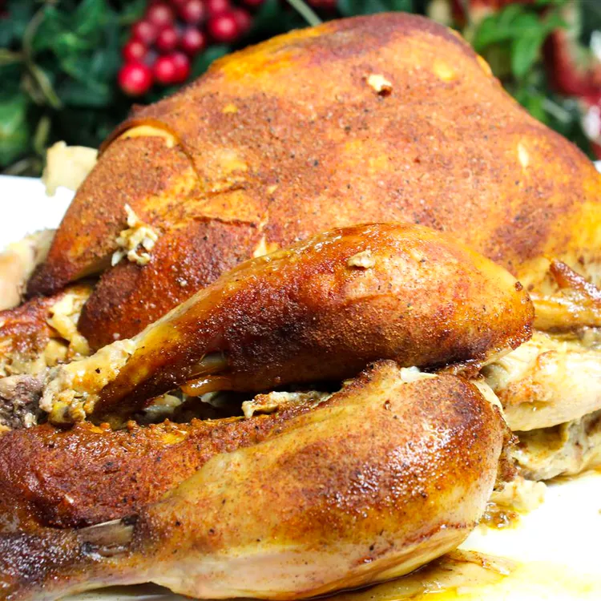

Slow Cooker Whole Chicken
This slow cooker whole chicken is super simple to prep for spicy, juicy chicken with little work. Get a chicken with a
pop-up timer if you can.
Ingredients
- 4 teaspoons salt, or to taste
- 2 teaspoons paprika
- 1 teaspoon cayenne pepper
- 1 teaspoon onion powder
- 1 teaspoon ground thyme
- 1 teaspoon ground white pepper
- ½ teaspoon garlic powder
- ½ teaspoon ground black pepper
- 1 whole chicken
Steps
- Mix salt, paprika, cayenne pepper, onion powder, thyme, white pepper, garlic powder, and black pepper together in a
small bowl.
- Rub seasoning mixture over entire chicken to evenly season. Put rubbed chicken into a large resealable plastic bag;
refrigerate, 8 hours to overnight.
- Remove chicken from the bag and cook in a slow cooker on Low until no longer pink at the bone and the juices run clear,
4 to 8 hours. An instant-read thermometer inserted into the thickest part of the thigh, near the bone, should read 165
degrees F (74 degrees C).